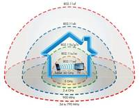
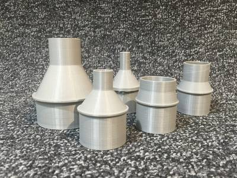
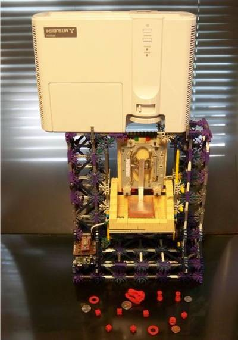

2016-01-07 - Nº 36

Editorial
Aqui está a Newsletter Nº 36 no seu formato habitual. Agora às quintas-feiras. Se gostar da Newsletter partilhe-a!
Todas as Newsletters encontram-se indexadas no link.
Esta Newsletter tem os seguintes tópicos:
Bem-vindos a 2016.
Esta semana foi apresentado o novo standard para comunicações sem fio - o IEEE 802.11ah - também designado por Wi-Fi HaLow. A AMD demonstrou a tecnologia FinFET de 14nm no seu GPU Polaris. Finalmente a sétima fila da tabela periódica fica completa com a descoberta dos elementos 113, 115, 117 e 118, ficando ainda por atribuir os seus nomes definitivos. Foi lançada uma nova versão do Energia - que é uma versão adaptada do Arduino IDE para placas/micro-controladores da Texas Instruments.
Esta semana apresentamos diversos projetos de maker e introduzimos uma rubrica nova chamada "Documentação". Esta semana apresentamos nesta rubrica, quatro livros (eBooks) que podem ser descarregados livremente e que abordam temáticas tão diversas como o Javascript, o GIT ou um Livro de bolso do Engenheiro Electrotécnico.
 João Alves ([email protected])
João Alves ([email protected])
O conteúdo da Newsletter encontra-se sob a licença  Creative Commons Attribution-NonCommercial-ShareAlike 4.0 International License.
Creative Commons Attribution-NonCommercial-ShareAlike 4.0 International License.
Novidades da Semana ^
Wi-Fi Alliance® introduces low power, long range Wi-Fi HaLow™

"With industry momentum mounting around a low power Wi-Fi® solution, Wi-Fi Alliance® today announced the Wi-Fi HaLow™ designation for products incorporating IEEE 802.11ah technology. Wi-Fi HaLow operates in frequency bands below one gigahertz, offering longer range, lower power connectivity to Wi-Fi CERTIFIED™ products. Wi-Fi HaLow will enable a variety of new power-efficient use cases in the Smart Home, connected car, and digital healthcare, as well as industrial, retail, agriculture, and Smart City environments. Wi-Fi HaLow extends Wi-Fi into the 900 MHz band, enabling the low power connectivity necessary for applications including sensor and wearables. Wi-Fi HaLow’s range is nearly twice that of today’s Wi-Fi, and will not only be capable of transmitting signals further, but also providing a more robust connection in challenging environments where the ability to more easily penetrate walls or other barriers is an important consideration. Wi-Fi HaLow will broadly adopt existing Wi-Fi protocols and deliver many of the benefits that consumers have come to expect from Wi-Fi today, including multi-vendor interoperability, strong government-grade security, and easy setup."
AMD Demonstrates Revolutionary 14nm FinFET Polaris GPU Architecture
_"AMD provided customers with a glimpse of its upcoming 2016 Polaris GPU architecture, highlighting a wide range of significant architectural improvements including HDR monitor support, and industry-leading performance-per-watt. AMD expects shipments of Polaris architecture-based GPUs to begin in mid-2016. AMD's Polaris architecture-based 14nm FinFET GPUs deliver a remarkable generational jump in power efficiency. Polaris-based GPUs are designed for fluid frame rates in graphics, gaming, VR and multimedia applications running on compelling small form-factor thin and light computer designs."
Discovery and Assignment of Elements with Atomic Numbers 113, 115, 117 and 118
"The fourth IUPAC/IUPAP Joint Working Party (JWP) on the priority of claims to the discovery of new elements has reviewed the relevant literature for elements 113, 115, 117, and 118 and has determined that the claims for discovery of these elements have been fulfilled, in accordance with the criteria for the discovery of elements of the IUPAP/IUPAC Transfermium Working Group (TWG) 1991 discovery criteria. These elements complete the 7th row of the periodic table of the elements, and the discoverers from Japan, Russia and the USA will now be invited to suggest permanent names and symbols."
New Energia 17 Release Brings SensorTag, Red Bear CC3200 And F28069M Support
"Energia is an open-source electronics prototyping platform developed by Robert Wessels with the goal to bring the Arduino and Wiring framework to the Texas Instruments MSP430™ LaunchPad evaluation kit. Energia is based on Arduino and the Wiring framework and includes an integrated development environment (IDE) that is based on Processing. The foundation of Energia and Arduino is the Wiring framework that is developed by Hernando Barragan. Energia currently supports several Texas Instruments devices. TI LaunchPad evaluation kits are low-cost microcontroller-based development kits that are made by Texas Instruments."
Ciência e Tecnologia ^
System Helps Novices Design 3D-Printable Robotic Creatures
"Even a novice can design and build a customized walking robot using a 3-D printer and off-the-shelf servo motors with the help of a new design tool developed by Disney Research and Carnegie Mellon University. The user can specify the shape, size and number of legs for the robotic creature, using intuitive editing tools to interactively explore design alternatives. The system also ensures that the resulting design is capable of moving as desired and not falling down. It even enables the user to alter the creature's gait as desired. "Progress in rapid manufacturing technology is making it easier and easier to build customized robots, but designing a functioning robot remains a difficult challenge that requires an experienced engineer," said Markus Gross, vice president at Disney Research. "Our new design system can bridge this gap and should be of great interest to technology enthusiasts and the maker community at large.""
Robot With Tummy Full of Microbes Can Swim in Dirty Water Forever
"Robots are better than animals in almost every way. Well, they're better in some ways, I guess. I mean, robots are occasionally okay at some things. A few things. None of those things are energetic autonomy: the ability to operate continuously and indefinitely without dependence on humans for refueling. There certainly are robots that operate autonomously for long durations, and they're either feeding off of radioactivity, or they're relying on solar panels that don't work half the time. A better option (at least in some situations) might be robots that forage for food like animals do, taking care of their own energy needs all by themselves. This is only a slightly crazy idea (although at one point it was briefly the craziest idea ever), and fuel cells that are full of living microbes are a real thing. At the Bristol Robotics Laboratory, in the United Kingdom, they've been developing a robot called Row-bot that can swim around, harvesting energy directly from the water using a microbial fuel cell as an artificial stomach."
Onion-like layers help this efficient new nanoparticle glow
"A new, onion-like nanoparticle could open new frontiers in biomaging, solar energy harvesting and light-based security techniques. The particle's innovation lies in its layers: a coating of organic dye, a neodymium-containing shell, and a core that incorporates ytterbium and thulium. Together, these strata convert invisible near-infrared light to higher energy blue and UV light with record-high efficiency, a trick that could improve the performance of technologies ranging from deep-tissue imaging and light-induced therapy to security inks used for printing money. When it comes to bioimaging, near-infrared light could be used to activate the light-emitting nanoparticles deep inside the body, providing high-contrast images of areas of interest. In the realm of security, nanoparticle-infused inks could be incorporated into currency designs; such ink would be invisible to the naked eye, but glow blue when hit by a low-energy laser pulse — a trait very difficult for counterfeiters to reproduce."
Documentação ^
A documentação é parte essencial do processo de aprendizagem e a Internet além de artigos interessantes de explorar também tem alguma documentação em formato PDF interessante de ler. Todos os links aqui apresentados são para conteúdo disponibilizado livremente pelo editor do livro.
Analog Engineer’s Pocket Reference Guide 4th Edition (Rev. B)
"Written by op amp experts Art Kay and Tim Green, the Analog Engineer's Pocket Reference covers a wide variety of popular precision signal chain topics – from op amp bandwidth and stability to analog-to-digital and digital-to-analog conversions and more."
Eloquent JavaScript - second edition
"Eloquent JavaScript, 2nd Edition dives deep into the JavaScript language to show you how to write beautiful, effective code. Author Marijn Haverbeke immerses you in example code from the start, while exercises and full-chapter projects give you hands-on experience with writing your own programs."
Introduction to Arduino: A piece of cake!
"This book is different than many Arduino books in that it expects no previous knowledge in electronics or programming. Instead of going into depth teaching those topics, it teaches only enough so that you can make things."
-
"Pro Git (Second Edition) is your fully-updated guide to Git and its usage in the modern world. Git has come a long way since it was first developed by Linus Torvalds for Linux kernel development. It has taken the open source world by storm since its inception in 2005, and this book teaches you how to use it like a pro."
Modelos 3D ^
Com a disponibilidade de ferramentas que permitem dar azo a nossa imaginação na criação de peças 3D e espaços como o thingiverse para as publicar, esta rubrica apresenta alguns modelos selecionados que poderão ser úteis.
Customizable Stereo Text (http://www.thingiverse.com/thing:1250852)
Inspired by the Markus Raetz Yes No sculpture, and the Mojoptix digital sundial, I whipped up this customizable OpenSCAD script to take the intersection of two text extrusions.
For best results, stick to all capital letters, and letters which do not require support. These letters are fine: AHIKLMNVWXY These may work: DJOQRU The rest are problematic, and would probably need dual extruders with dissolvable support.
You can have different text for the two viewing directions, adjust the angle between the views, and change the base thickness.
The customizer isn't showing an option for changing the font parameter, I don't know why. In any case, I do not know what fonts the Customizer supports. If you wish to change the font, download the script and process it with OpenSCAD.
Introduction to Parametric Customization (http://www.thingiverse.com/thing:1201466)
This is a customizable box with a sliding lid and customizable dividers created in OpenSCAD and is part of a series of OpenSCAD lesson found below.
Please Note: Some features have been left incomplete as an exercise for the reader. For a complete version please see the original box with sliding lid
Changes to the Daring Fireball markdown might make these directions look awful. A full archive of the images, lessons and SCAD files can be found here:
https://github.com/txoof/sliding_box
Vacuum Hose Adapter (Customizable) (http://www.thingiverse.com/thing:1246651)

This file is designed to create adapters to connect shop or household vacuum hoses of any diameter with tools with any size round tool ports.
You can use Customizer to specify the inside or outside diameter of each end as well as the length of each segment. The adapter has a ring on the outside of the large section to provide a grip to pull it off the hose/tool. You can specify an optional internal ring at the lower end of the small section to keep a tool from being sucked into the adapter.
All dimensions are entered in mm. (Note: Customizer seems NOT to like trailing zeros in decimal dimensions; so enter dimensions as 10.1 or 10.13, NOT 10.10 or 10.130.)
Projetos Maker ^
Diversos Projetos interessantes.
Trondheim Makers Folding Workbench
"This is a part of the interior of Trondheim Makers Mobile Makerspace, a 25" long trailer with workspace for 16-18 people, 3D-printers, PCs, Dev-kits etc. This is a trailer that we lend out to schools, youth clubs, libraries and other organizations here in mid-Norway. We had some special needs for our workbenches; they had to be easy to move (in and out of the trailer, inside the trailer if we would like to reorganize the placement, ++). As the space inside the trailer is limited, we have to use the benches for several different tasks; they have to house a pc, soldering stations, electronic equipment, but there should also be room for drawing and building. And it should be easy to hide the mess you are creating while doing projects :)"
Heatless (cold) Toner Transfer for PCB Making
"Toner transfer method for making PC boards is very practical and economical. The use of heat for the transferring is not. Large boards expand with heat (more than the laser print) and heat is applied to the top of the toner and not to the bottom contacting the copper layer. Too much heat melts and deforms the toner, too little heat and it won't adhere uniformly. In this Instructable I will describe a very simple technique I've been using for over 15 years. It is very fail-proof and involves the use of only 2 common chemicals : Ethylic Alcohol and Acetone. You can replace the Acetone with Toluene or Xylene, but you will have to experiment with the proportions."
Better 3D graphics on the Arduino – ILI9341 LCD
"A while ago I purchased a cheap $4 Chinese LCD Arduino shield from Ebay (e.g 1 2 3). The board arrived with no documentation. Disassembling the shield revealed no ICs, indicating that the driver is integrated with the LCD itself. Upon request, the vendor provided an archive containing a few amusingly translated datasheets, as well as a copy of Adafruit's Arduino LCD drivers. Evidently the product is a clone of the Adafruit LCD shields, and uses the ILI9341 LCD driver. I had hoped to use the display to show short animated GIF loops. This is not, in practice, possible. Test animations loaded slowly, with noticeable flicker and vertical tearing. The Arduino does not have enough speed or bandwidth to render full-screen animation frames, but what about 3D vector graphics?"
Reverse engineering the ARM1, ancestor of the iPhone's processor
"Almost every smartphone uses a processor based on the ARM1 chip created in 1985. The Visual ARM1 simulator shows what happens inside the ARM1 chip as it runs; the result (below) is fascinating but mysterious.[1] In this article, I reverse engineer key parts of the chip and explain how they work, bridging the gap between the puzzling flashing lines in the simulator and what the chip is actually doing. I describethe overall structure of the chip and then descend to the individual transistors, showing how they are built out of silicon and work together to store and process data. After reading this article, you can look at the chip's circuits and understand the data they store."
Notebook with LED Reminders
"I always carry a notebook to meetings so I can keep track of what needs to get done. However, I often fail to follow up on my "to do" items as I would routinely forget to check individual pages which is why I wanted a notebook that provides easily noticeable reminders. This notebook has four color coded sections and correlating LED's build into the cover to provide visual reminders for things that need attention. Now as I record things I simply slide the switch to activate the LED and one look to the outside of my notebook tells me what needs to get done."
DIY a Simple Automatic Humidifier
"In today’s society, more and more attention to the quality of life, pursue the healthy and comfortable living environment. So we made this device to monitor the indoor temperature and humidity, when the humidity falls below the safe values, it will automatically open the humidifier."
How to Make a Mini Pump
"In today's video I'm going to tell you you a brilliant idea that I have got recently absolutely accidentally. There just was a bottle with a smaller diameter in the bottle that was already cut. When I turned bottles in my hands and looked at it, then I decided to make a pump)"
The Companion IC
"The Companion IC is a very cool looking Clock + Ohmmeter + Capacitance Meter + Diode Tester! Turn it on by pressing Pin 1 of the IC! Keep this at your work bench for a quick test of components and checking time. Can be run on batteries or with USB if you have a supply near your work bench. This instructable explains in great detail how I made this and how you too can make it on your own. It is beginner friendly and anybody with 2-3 weeks of Arduino /Electronics experience can build this!"
Simple and Small Full-bridge-rectifier
"In this instructables I show you how tu build a super simple full bridge rectifier. If you have an AC power supply, but you need a DC Voltage, you can simply take this rectifier, connect it to your AC power supply and you are done."
How to Make a Mini Portable Speaker
"In today's video I'd like to show you how to make a portable speaker for a cell-phone. In general, nowadays you can easily purchase portable speakers for a cell-phone as the price is low and the supply is big. However, it's far more interesting to make it by yourself."
Betty Hacker embeds open hardware electronics into cakes
"Food and electronics don't usually mix well—unless you're cake hacking. I've been embedding electronics into edible cakes since 2008. And, in 2009, my group won the New York City Yahoo! Hackathon with a cake that showed rudimentary emojis via LEDs with emotions based Del.ico.us tags. Most cakes I've put electronics in have been for friends' birthdays. I've made cakes with LED candles, cakes with motorized candles (fun flame effects!), singing cakes, and even a Game Boy cake with Mario Bros sounds. I generally use open hardware Arduinos to run the cakes. Not wanting to poison friends on their birthdays, I've learned a few tricks along the way."
INA219 Current Sensor DIY Breakout board
"Another small board, this time for a INA219. The INA219 is a high-side current shunt and power monitor with an I2C interface."
Chimera: $60 DLP High-Res 3D Printer

"I have been on a hunt for the past several years to find a cheap and simple, yet moderately high resolution 3D printer. I had 3 different 3D printers partially constructed when I heard about the amazing technology of DLP Stereo lithography (SLA) printers. I have finally found enough parts at the right price to construct a fully functional printer capable of amazing quality with spending less than $100. Top down DLP printers in their simplest form have only one axis of motion, a video projector, and minimal electronics. They do not require a heated or perfectly level bed, there is never a clogged or wrong temperature in the extruder as it does not use an extruder. And the resin used has a comparable price to FDM printers."
Cool DIY Light Up Shoes

"I made this project to teach young kids the concept of electricity and to show them how LEDs work. Turns out its a great way to start hands on with LEDs. So all you young makers sit tight and go through this short and easy to do instructable and I promise you will end up with a pair of really cool light up LED shoes in an hour or so. Since this is my first instructable ever, please point out any mistakes you find and I'll gladly rectify them. The best part about this instructable is you do not need to be a rocket scientist to make it and you do not need any high end tools or equipment. All the stuff I've used is dirt cheap."
Make Your Old Joystick Bluetooth!
"I found this outdated joystick in a free bin and decided to give it a new life as a bluetooth controller for a Raspberry Pi. This joystick was designed for an Xbox 360 but you could use any similar device or even an old gamepad."
AVRelay - pocket AVR game console
"I want to show you my project "AVRelay". It is a pocket mini AVR computer. It loads system on startup so you are able to load from SD card game or app. On video you can see older version of system, now it has GUI ;) There are two Atmega328. First processor is called "SDLoader", second is main processor (it is connected to LCD and buttons). Both CPUs are connected via I2C (Wire Library) for communication and serial port to loading .HEX program from SD card through SDLoader to Main CPU. To code SDLoader I used BootDrive project."
How To Build A Smart Mirror Using Raspberry Pi
"If you're looking to give your boring old mirror an upgrade, this is the way to do it."
SPI to Neopixel Converter
"This is a method of driving Neopixels from a embedded controller that does not depend on precise mcu bit bang timing or the bit inefficient SPI bit banging method. This method does use SPI but here one SPI data bit represents one Neopixel bit. This method requires some additional hardware and requires a SPI clock of 1MHZ. This results in a Neopixel data transfer time of 1usec which is within the Neopixel WS2812 chip data sheet specification of 1.25 usec +/- 600 nsec. This circuit will work at 5V and 3.3 volts but make sure the 20 Mhz oscillator works properly at these voltages."
Auto Power Off: save batteries
"This little circuit allows your microcontroller to cut the power off. To turn the circuit on press the button. To turn it off drive the "to microcontroller" signal high using whichever condition you like. For battery applications you might want to have a voltage reading on another pin (a voltage divider will do the job) and drive the pin high when a certain threshold has been reached."
Homebuilt (DIY) CNC router - Arduino based (GRBL)
"Already for a few months or even years, I was planning to build my own CNC milling machine. Now I decided it was time to do it! I read a lot about other DIY projects and in the end I liked the design from the Arduino CNC intstructable that I found here. Although the dimensions were unclear and the programming and calibration was all in Spanish, I figured all that out by myself. In the end, I only used the design for reference. In this instructable, I'll try to explain my steps, from the very beginning of the design, until the very end of your first gcode."
That's all Folks!